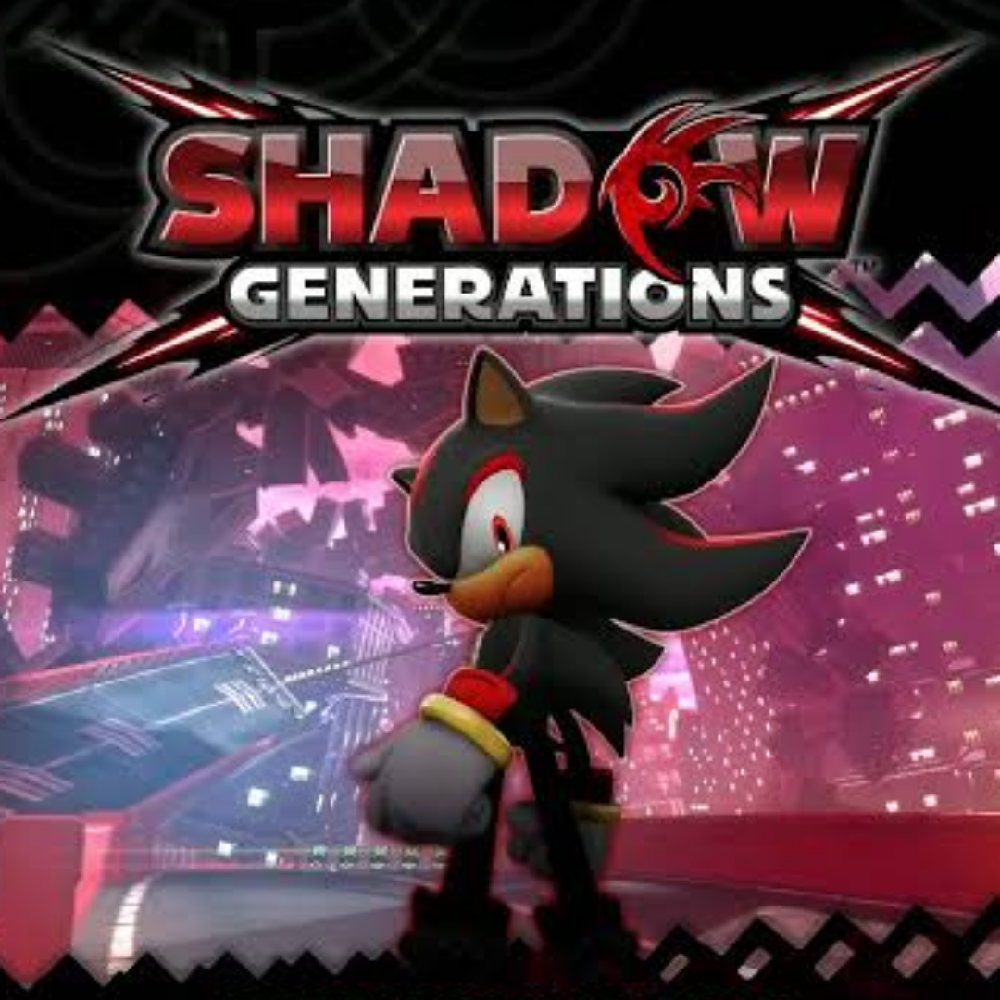

Mijn favoriete games
Ik als persoon ben alles behalve een competitieve gamer, ik houd van Platformers, tower defense games, en sommige RPG's verder speel ik wel wat andere games, ik sta heel erg open voor nieuwe ervaringen. Als ik mijn top 5 games aller tijden moest aanwijzen zou het zijn:
-

5. Shovel knight treasure trove
-

4. Plants vs Zombies 2 Altverz
-

3. Shadow generations
-

2. Pokémon emerald
-

1. Megaman X4
Al deze games hebben heel veel invloed gehad op het persoon dat ik nu ben geworden, en het type games dat ik wil maken. Wat ik denk dat al deze games gemeen hebben is dat ze voelen alsof de developers exact wisten wat ze wouden doen met de games, en wat de fans wouden van deze projecten. Wat ik heel erg kan respecteren. Twee van deze games zijn het perfectioneren van de gameplay (pokemon emerald en Megaman X4), terwijl de andere drie heel innovatief waren in hun veld. Ik zou over al deze games uurlange video essays kunnen maken over wat ze zo uitstekent maakt.